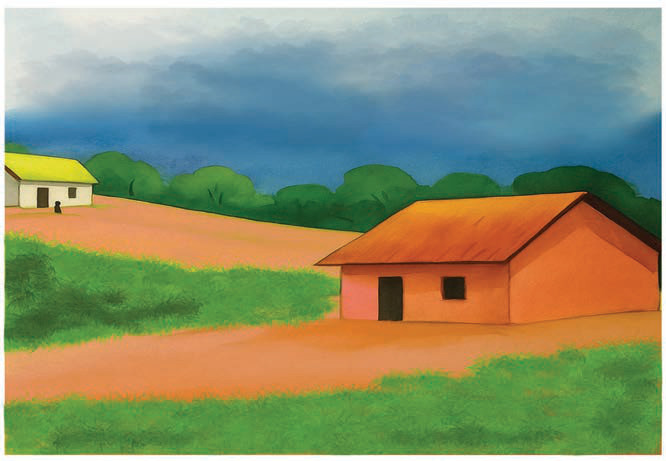

Rangi
Rangi huongeza umaridadi katika picha na kuelezea vitu kwa uhalisia na ufasaha zaidi. Rangi hutumika pia kutofautisha kitu kimoja na kingine katika picha. Kwa mfano rangi ya kijani mara nyingi huonesha mimea, rangi ya bluu bahari mara nyingi huonesha bahari au milima iliyoko mbali, na rangi ya kahawia mara nyingi huonesha ardhi. Kielelezo namba 23 kinaonesha jinsi rangi ilivyotumika kuonesha uhalisia wa vitu kwa ufasaha, na kutofautisha kati ya milima, mimea, na ardhi.

Unamu
Tumezungukwa na unamu. Unamu upo katika kila kitu. Unamu hupatikana katika nyuso za vitu mbalimbali kama vile magome ya miti, mawe, ardhi, na kwenye miili ya wanyama. Unamu ni kitu muhimu katika uchoraji ambacho husaidia kuleta hisia, uhalisia, na mvuto wa picha iliyochorwa. Matumizi yake yanaweza kuonekana kwa njia mbalimbali, kama vile kuongeza uhalisia, kuongeza mvuto wa picha, kutoa tafsiri mbalimbali kwa watazamaji na kusaidia msanii kuwasilisha ujumbe wake kupitia picha.
Unamu upo wa aina mbili. Kuna unamu tunaouhisi kwa kugusa vitu vinavyotuzunguka, na unamu tunaouhisi tunapoangalia vitu kwa macho. Mchoraji anaweza kuonesha unamu katika picha. Kielelezo namba 24 kinaonesha mwonekano tofautitofauti wa unamu katika uchoraji.